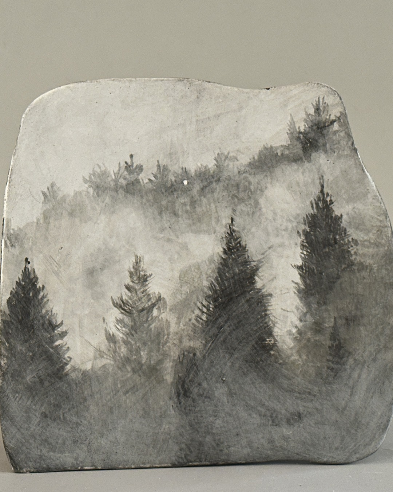
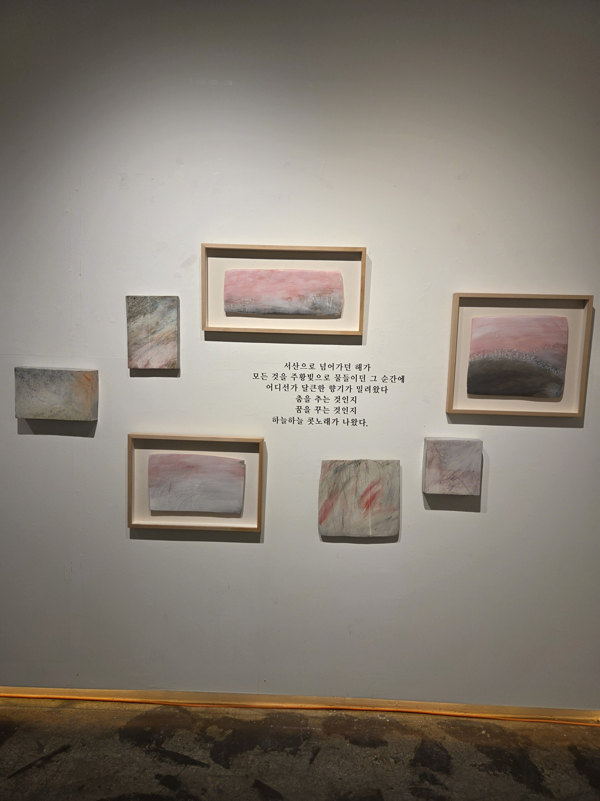
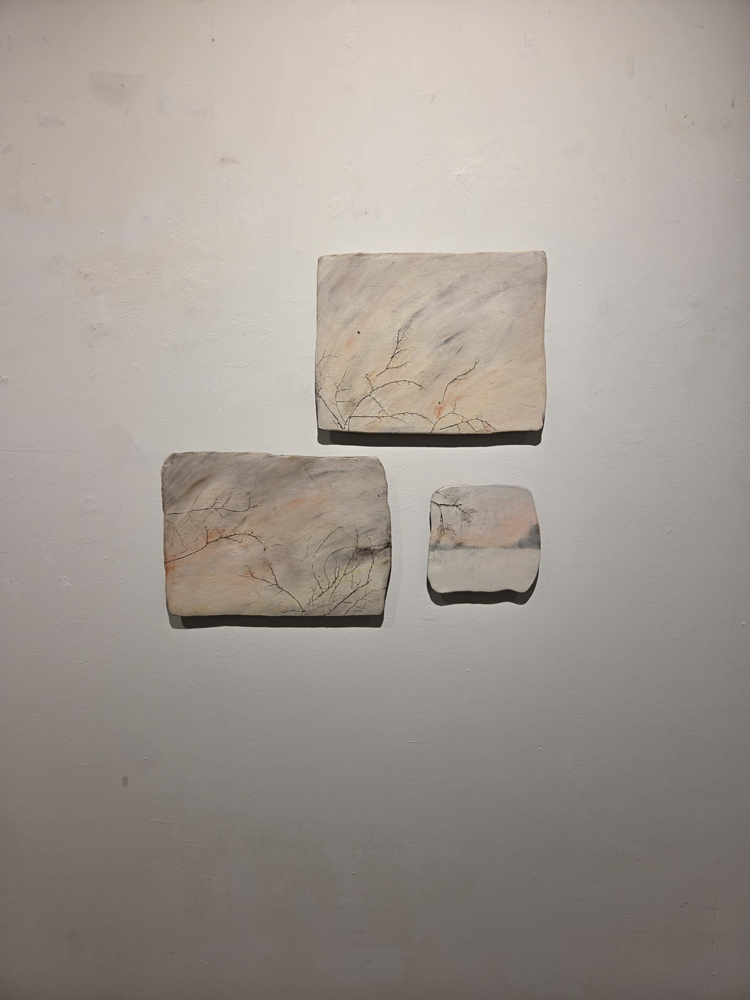

신불당아트센터 · 오디오 도슨트
엄미희
「숲이 머문 자리」
Where the Forest Dwells



▶ 눌러서 작품 설명 듣기
엄미희 작가의 개인전, 「숲이 머문 자리」에 오신 걸 환영해요.
지금 보시는 그림들은 캔버스가 아니라, 흙판 위에 그린 그림이에요.
작가는 흙을, 숲이 스쳐 간 시간과 바람, 호수의 일렁임을 받아내는 캔버스라고 말해요.
그림 속 숲은 두 곳에서 왔어요. 핀란드 포시오의 원시림, 그리고 아산 송악의 숲이에요.
판의 가장자리를 한번 보세요. 반듯하게 자르지 않은, 정형화되지 않은 흙판이에요.
가까이 다가가면, 채집한 식물이 남긴 흔적과 아주 가는 시간의 균열, 겹겹이 쌓인 색의 층이 보여요.
한 걸음 물러섰다가, 다시 한 걸음 다가가서 보세요. 같은 그림이 전혀 다르게 보일 거예요.
「숲이 머문 자리」는 11월 29일까지, 신불당아트센터 2층 M갤러리에서 무료로 만나실 수 있어요.
작가 인스타그램 @mihee_ceramist
관람 무료 · 11월 29일까지
1층 멜버른커피하우스에서 커피 한 잔 하고 가세요.
신불당아트센터 홈페이지 · @shinbuldang_artcenter
관람 무료 · 11월 29일까지
1층 멜버른커피하우스에서 커피 한 잔 하고 가세요.
신불당아트센터 홈페이지 · @shinbuldang_artcenter